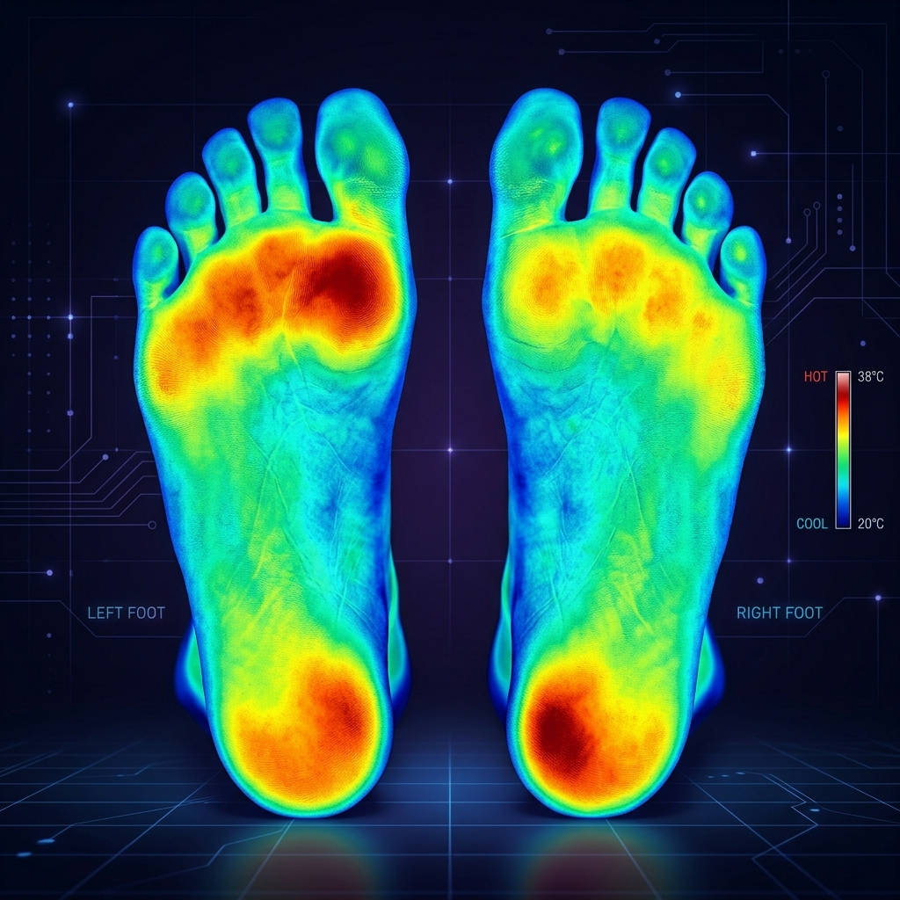

Diab-Aid pairs smart insoles with AI models that detect pressure hotspots, temperature spikes, and gait anomalies — then alerts you and your doctor in time to prevent ulcers.

People Living with Diabetes
Complications Preventable
Continuous Monitoring
Prediction Accuracy
Diabetic foot ulcers are a leading cause of hospitalizations, but they don't happen overnight. Current methods rely on manual, infrequent checks, missing the critical window for prevention.
Ulcers often go unnoticed until it's too late due to neuropathy and loss of sensation.
Frequent clinic visits are required, placing a heavy burden on patients and healthcare systems.
Subjective daily self-checks are unreliable and often forgotten by patients.
Every 20 seconds, a lower limb is lost to diabetes globally. It's time for a change.
A comprehensive ecosystem combining wearable IoT, cloud architecture, and predictive AI.
Discreet smart insoles packed with pressure, temperature, and humidity sensors.
Machine learning models trained to detect early signs of ulceration.
Secure, real-time data sync powered by scalable cloud architecture.
Direct integration with clinical dashboards for immediate intervention.
Continuous protection without the need for hospital visits.
Tailored daily recommendations based on your unique gait and habits.
Seamless protection in every step.
Simply wear your shoes equipped with Diab-Aid smart insoles as usual.
Sensors continuously gather pressure mapping, temperature, and humidity data.
Data is securely transmitted to our HIPAA-compliant cloud servers in real-time.
Advanced algorithms analyze data for micro-anomalies indicating tissue stress.
If risk is detected, instant alerts are sent to both the patient and their care team.
Timely intervention prevents ulcers, keeping feet healthy and patients mobile.
Everything you need for comprehensive foot care management.
End-to-end architecture built for reliability and scale.
Tailored interfaces for every stakeholder in the care journey.
Visualize health data with clarity and precision.
Join the future of preventive diabetic care.
Questions about deployment, devices, or clinical integration? We're here to help.